分散型ではなく連合としてのMastodon
Akihiko Odaki <nekomanma@pixiv.co.jp> この 作品 (
この 作品 (index.html) は
クリエイティブ・コモンズ 表示 - 継承 4.0 国際 ライセンスの下に提供されています. 表示される画像等はそれぞれのライセンスに従います.
whoami
- 神楽坂一丁目通信局
- 2015年10月-: Prog部員. 2016年10月-: Web部長
- Data Direct Networks
- 2017年4月-6月: インターン
- pixiv
- 2017年7月-: アルバイト
* どれも今回の発表内容とは関係ない
whoami
- TsuboneSystem (AGPL-3.0+)
- Mastodonインスタンス o.kagucho.net (AGPL-3.0)
- (Apache-2.0)
- collectdプラグイン (GPL-2.0)
- (AGPL-3.0)
 (AGPL-3.0)
(AGPL-3.0)- The Mesa 3D Graphics Library (MIT)
- PixiJS (MIT)
分散
- 分散させる (distribute)
- 1つだったもの (Twitter) を分け, 散り散りにする
本当に,
1つ
だったのか
Activity Vocabulary
Actvitiy Vocabularyは, SNS上のデータ, activity (人々の活動) を表現する規格, Activity Streamsで用いられる語彙. [Activity Vocabulary]
Activity Vocabulary
Object Types. [Activity Vocabulary]
- Article
- Audio
- Document
- Event
- Image
- Note
- Page
- Place
- Profile
- Relationship
- Tombstone
- Video
ActivityPubの『スコープ』
Activity Streamsを配信し, 『連合』を構築する仕組みは必ずしも全てのActivity Vocabularyに対応しない.
それでもなお, Twitterよりも広い. Twitterはマイクロブログサービスとしての要素さえも全てを含むわけでない.
連合の『スコープ』
- 140字? 500字?
- 規格上の制限はない.
- Note (トゥート) を共有するためのもの?
- 例えばPawooは? (pixiv cardを共有する)
Pawoo Musicは? (音楽を共有する)
分散ではない,『連合』
Twitterという, 1つのパイを奪いあうものではない.
多くのSNSに分散した世界を1つにするための技術.
分散の例
- BitTorrent
- 同じ情報を分散させる
- BitCoin
- 同じ通貨を分散させる
- BOINC
- 同じ演算問題を共有する
分散されたデータは相互に置換可能
連合の例
- インターネット
- 異なる目的を持ったコンピュータが繋がる
- World Wide Web
- 異なる情報がハイパーリンクによって繋がる
挑戦
WWWとの連携
既存の連合としてのWorld Wide Webを尊重すること
- URL Scheme for Activity Streams 2.0, web+mastodon scheme
- 連合たるWWWにハイパーリンクで接続する
- HTML埋め込み対応
- 共有の仕組みの1つとして無視することはできない
- トゥート内のactivityへのリンクの対応の改善
- 連合の機能を統合できていない
ActivityPubでの寛容, 相互理解
異質なものが存在しうる連合に対応すること
- DoSなどの攻撃の寛容
- 悪意は存在する
- 拡張実装への寛容
- Mastodonとは異なる目的は存在する
- 標準化
- Mastodonと繋がる他の実装は存在する
ここから妄想
Activity Vocabularyのより広範なサポート
Pawooで扱う画像はサポートされている
Pawoo Musicで扱う音楽は動画に変換
他のサービスではより異なる種類のactivityが?
WWWの機能に注目する
- 誰もが情報を編纂することができる
- ハイパーリンクによって繋がる
ActvitiyCollection
TwitterモーメントやTogetterと同質
Activitiesをまとめることで, 容易にcollectionを作成できる
Activity Streams 2.0の
Collection
objectを用いる
Hyper Activity
WebFingerを拡張
- Noteへのリンク
- fn_aki@pawoo.net/im_writing_slides_now
- Collectionへのリンク
fn_aki@pawoo.net/cats
idをつけるをユーザーに求めるのはマイクロブログの気軽さを失わせてしまうのでは?
ユーザーにidを割り当てることが受け入れられているし問題はない?
検索エンジン
既にいくつかある
プライバシー? → 情報は公開されているということを教化する必要
実際難しい

独自拡張
例: web+mastodon scheme
Mastodonが大多数を占める現状では問題ないが…?
GNU Socialは?
規格の欠如
OStatusはGNU Social互換の実装を作成するために十分ではない
GNU Socialの実際の動作を観察することで開発されたMastodon
予期せぬ退行, 統合した際のセキュリティ上の問題が発生
過去のプロトコルとの互換性
例: ActivityPubとOStatus
とても辛そう (よく知らない)
ユーザーの教化
「中央集権でない」というだけで惹きつけられるユーザーは僅か
それでも
「立ち止まることと、諦めることは同義だ」
Twitterと同じスコープでは、その強力なライバルに打ち負かされる
→ 分散に留まり続けていたら死ぬ
連合を活かそう
参照
- [Activity Vocabulary]
- James M Snell; Evan Prodromou. W3C. URL: https://www.w3.org/TR/activitystreams-vocabulary/
ライセンス
index.html- Akihiko Odakiにより, クリエイティブ・コモンズ 表示 - 継承 4.0 国際 ライセンスの下に提供されています.
gears.png- Brian Paul氏によりMITライセンスの下に提供されています.
{kind=link}
ライセンス
logo250c.png- 神楽坂一丁目通信局により, AGPL-3.0の下に提供されています.
logo_full.svg- Gargron氏により, AGPL-3.0の下に提供されています.
{kind=link}
ライセンス
logo_pawoo.png- pixiv株式会社により, AGPL-3.0の下に提供されています.
logo_transparent_400x.png- Raintank Inc.により, Apache-2.0の下に提供されています.
{kind=link}
{kind=link}